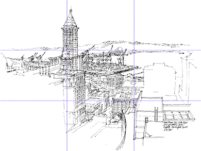

Drawing, contrary to popular belief, is not a talent most are born with. It is a perisheable skill that must be practiced regularly.
Learning to draw is not learning to train your hand, but teaching yourself a new way of seeing or observing the world. Your hand is just an extension of your eyes.
Below I have laid out some of the basic rules, techniques, and fundementals of drawing, which if followed can set anyone on the path to creating beautiful pieces of art.
Below I've laid out an economical and powerful set of drafting materials. If used in conjunction with the core concepts we will address later, these seemily simple tools will help you produce complex and striking compositions. Most can be purchased at your local Wa-Wa or through the links I have provided in this section.
The proper tools will svae you time and money. You can find links on the right to purchase my favorite tools online.
Familiarze yourself with the concepts below. They are invaluable when drafting any piece, even quick sketches or studies.
When choosing a scene to put on paper we generally follow some basic rules before actually putting pencil to paper. The Rule of Thirds is a great starting point for begenners to compose a scene, and it applies to both horizontal and vertical layouts. The rule of thirds states that if you divide any composition into thirds, vertically and horizontally, then place the key elements of your image either along these lines or at the junctions of them, you'll achieve a more pleasing arrangement and more interesting and dynamic compositions.
Properly translating a scene from the three dimensional world onto flat piece of paper is the most challenging part of drawing. It disocurages even the most tenacious student. Don't feel bad when starting out if you struggle to make this jump artists were not able to accomplish this task until the mid 1300's. It is not easy. To sum up the concept, it is a practive in creating an optical illusion. In the exercises section you will find it helpful to repeat the section of drawing simple boxes of the same size at different distances from each other.
The two most characteristic features of perspective are that objects are smaller as their distance from the observer increases; and that they are subject to foreshortening, meaning that an object's dimensions along the line of sight are shorter than its dimensions across the line of sight. See the diagram below for a visual reference.
Giving your compositon form and and the feeling of body requires an uderstanding of light and the range or shades of light and dark values it produces on an object. There are a wide range of ways to mimic these values in your piece or art. Some of the more commonly used techniques are explained below.
Shading is the technique of varying the tonal values on the paper to represent the shade of the material as well as the placement of the shadows. Careful attention to reflected light, shadows and highlights can result in a very realistic rendition of the image.
Blending uses an implement to soften or spread the original drawing strokes. Blending is most easily done with a medium that does not immediately fix itself, such as graphite, chalk, or charcoal, although freshly applied ink can be smudged, wet or dry, for some effects. For shading and blending, the artist can use a blending stump, tissue, a kneaded eraser, a fingertip, or any combination of them. A piece of chamois is useful for creating smooth textures, and for removing material to lighten the tone. Continuous tone can be achieved with graphite on a smooth surface without blending, but the technique is laborious, involving small circular or oval strokes with a somewhat blunt point.
Shading techniques that also introduce texture to the drawing include hatching and stippling. A number of other methods produce texture. In addition to the choice of paper, drawing material and technique affect texture. Texture can be made to appear more realistic when it is drawn next to a contrasting texture; a coarse texture is more obvious when placed next to a smoothly blended area. A similar effect can be achieved by drawing different tones close together. A light edge next to a dark background stands out to the eye, and almost appears to float above the surface.
Almost all draftsmen use their hands and fingers to apply the media. Prior to working on an image, the artist typically explores how various media work. They may try different drawing implements on practice sheets to determine value and texture, and how to apply the implement to produce various effects. The artist's choice of drawing strokes affects the appearance of the image. Pen and ink drawings often use hatching—groups of parallel lines. Cross-hatching uses hatching in two or more different directions to create a darker tone. Broken hatching, or lines with intermittent breaks, form lighter tones—and controlling the density of the breaks achieves a gradation of tone. Stippling uses dots to produce tone, texture and shade. Different textures can be achieved depending on the method used to build tone. Drawings in dry media often use similar techniques, though pencils and drawing sticks can achieve continuous variations in tone. Typically a drawing is filled in based on which hand the artist favors. A right-handed artist draws from left to right to avoid smearing the image. Erasers can remove unwanted lines, lighten tones, and clean up stray marks. In a sketch or outline drawing, lines drawn often follow the contour of the subject, creating depth by looking like shadows cast from a light in the artist's position. Sometimes the artist leaves a section of the image untouched while filling in the remainder. The shape of the area to preserve can be painted with masking fluid or cut out of a frisket and applied to the drawing surface, protecting the surface from stray marks until the mask is removed. Another method to preserve a section of the image is to apply a spray-on fixative to the surface. This holds loose material more firmly to the sheet and prevents it from smearing. However the fixative spray typically uses chemicals that can harm the respiratory system, so it should be employed in a well-ventilated area such as outdoors. Another technique is subtractive drawing in which the drawing surface is covered with graphite or charcoal and then erased to make the image.